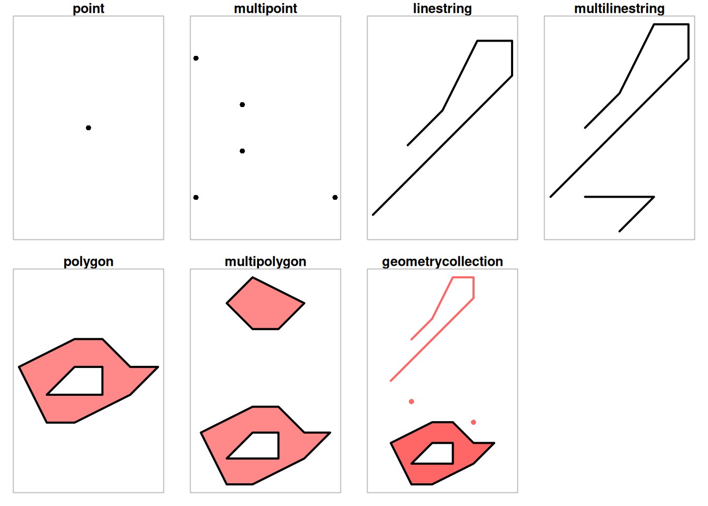

Code
library(sf) |> suppressPackageStartupMessages()
par(mfrow = c(2,4))
par(mar = c(1,1,1.2,1))
# 1
p <- st_point(0:1)
plot(p, pch = 16)
title("point")
box(col = 'grey')
# 2
mp <- st_multipoint(rbind(c(1,1), c(2, 2), c(4, 1), c(2, 3), c(1,4)))
plot(mp, pch = 16)
title("multipoint")
box(col = 'grey')
# 3
ls <- st_linestring(rbind(c(1,1), c(5,5), c(5, 6), c(4, 6), c(3, 4), c(2, 3)))
plot(ls, lwd = 2)
title("linestring")
box(col = 'grey')
# 4
mls <- st_multilinestring(list(
rbind(c(1,1), c(5,5), c(5, 6), c(4, 6), c(3, 4), c(2, 3)),
rbind(c(3,0), c(4,1), c(2,1))))
plot(mls, lwd = 2)
title("multilinestring")
box(col = 'grey')
# 5 polygon
po <- st_polygon(list(rbind(c(2,1), c(3,1), c(5,2), c(6,3), c(5,3), c(4,4), c(3,4), c(1,3), c(2,1)),
rbind(c(2,2), c(3,3), c(4,3), c(4,2), c(2,2))))
plot(po, border = 'black', col = '#ff8888', lwd = 2)
title("polygon")
box(col = 'grey')
# 6 multipolygon
mpo <- st_multipolygon(list(
list(rbind(c(2,1), c(3,1), c(5,2), c(6,3), c(5,3), c(4,4), c(3,4), c(1,3), c(2,1)),
rbind(c(2,2), c(3,3), c(4,3), c(4,2), c(2,2))),
list(rbind(c(3,7), c(4,7), c(5,8), c(3,9), c(2,8), c(3,7)))))
plot(mpo, border = 'black', col = '#ff8888', lwd = 2)
title("multipolygon")
box(col = 'grey')
# 7 geometrycollection
gc <- st_geometrycollection(list(po, ls + c(0,5), st_point(c(2,5)), st_point(c(5,4))))
plot(gc, border = 'black', col = '#ff6666', pch = 16, lwd = 2)
title("geometrycollection")
box(col = 'grey')
